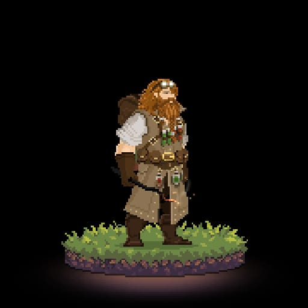

Bem Vindo Jovem e Inesperiente Aventureiro!
Confuso? Bem, nós vamos servir como aquela taverna onde você se reúne com seu grupo para descobrir informações para a sua próxima missão. Primeiro se acomode perto da lareira que vamos para as explicações.
O que é RPG
RPG é sobre se deixar levar pela imaginação
O Role Playing Game (RPG) é um jogo de “interpretação de personagens”, como diz a tradução, onde cada jogador da vida a um personagem e um outro jogador “da vida” ao universo onde se passa a história. Esse ultimo jogador mencionado é o “Mestre” e ele é responsável por guiar a história, propor desafios e regrar as ações dos personagens (sim, RPG tem regra, não é bagunça, mas quase) com auxílio do livro. Já os outros jogadores são quem vivenciam a narrativa conforme superam as dificuldades impostas pelo mestre e os dramas de cada personagem. É mesmo, não falei sobre o livro, bem esse é comparável a bíblia do rpgista, é nele que vem detalhada as regras, o universo, os seres e todo o básico para guiar sua aventura.
Muitos gostam de dizer que RPG é estruturado por três pilaresExploração, Interação e Combate
Nota: existem outros tipos de RPG, mas aqui iremos tratar do clássico RPG de mesa
O que é? Por que D&D?
Dungeons and Dragons (D&D para os mais íntimos) foi o primeiro RPG criado e é até hoje o mais famoso e mais jogado do mundo. Com forte inspiração nas obras de Tolkien ele está na sua quinta edição e se passa em universo de fantasia medieval com Elfos, Orcs, bruxos e… claro, Dragões. Para saber mais sobre a história de D&D clique aqui.
Nós, mestres dos dados previmos que você teria uma promissora trajetória como herói (ou será como vilão?), e por isso decidimos doutrina-lo em um dos mais antigos testamentos nerds, o D&D. Então o que estamos esperando para começar?
Regras
Como eu disse, apesar de parecer uma bagunça, RPG tem regras, mas a maior regra é a diversão, então vale sempre conversa com seu mestre ou jogadores para ver se cabe uma modificação nas regras propostas pelo livro, essas alterações nas regras são chamadas de “Homebrews” ou regras da casa e existem desde a primeira mesa de RPG.
o D&D é um sistema d20, ou seja, suas principais ações acontecem em torno do rolamento de um dado d20. É simples, o mestre narra uma situação, o jogador diz o que quer fazer, o mestre solicita um teste (pede para rolar um dado de determinado atributo), o jogador rola o dado e o valo tirado (de 1 a 20) irá definir se ele foi bem ou mal sucedido na sua ação. O básico é isso, porém existem fatores que interferem e muito nessas ações, como o atributo testado para realizar determinado ato, por exemplo, alguns personagens tem mais força física que outros, logo, tem mais facilidade para realizar atos que necessitam de força, e o sistema possui uma forma de calcular essas facilidades e dificuldades se baseando na ficha do personagem que é o que descreve seu “herói”. Outro fator que causa grande impacto na suas ações é o seu turno, isso é para definir o tempo das suas ações, em um combate o turno de cada personagem (isso é o tempo que cada personagem tem para realizar suas ações) costumar ser de alguns segundos, mas confie em mim, um Orc com uma clava na mão consegue fazer estragos grandiosos em alguns segundos, é como diria o grade Gandalf: “Tudo o que temos é decidir o que fazer com tempo que nos é dado”.
Um fator indispensável em uma aventura são os pontos de vida (HP), dano e pontos de experiência (XP). Como o nome sugere o HP define a vida dos personagens, tendo um valor máximo que varia da raça, classe e nível do personagem, já o dano é o que vai ameaçar reduzir o HP, reduzindo a cada ataque bem sucedido ou efeito causado um valor muitas vezes tirado no dado (com dados diferentes para danos diferentes). O XP é o que vai possibilitar seu personagem subir de nível, e isso pode ser calculado por uma pontuação que aumenta a cada desafio superado ou de acordo com a evolução da história, quem decide é o mestre.
Para poder ver as principais regras de um jogo de RPG acesse esse link e veja uma coletânea que reunimos após ler muitos pergaminhos antigos e decifrar runas esquecidas.
Raças e Classes
Bem, falar de jogos de RPG é falar de imaginação, como já mencionamos, então por nos limitarmos a viver vidas humanas e nos ater a um único ofício sem criatividade? Não há motivos, para isso que servem as Raças e as Classes.
Raças

“Imagine você, entrando em uma cidade, atravessa os grande portão dela, sente aquele cheiro típico das grandes cidades, cheiro de gente, das cozinhas, das especiarias do mercado e do saneamento precário. Você anda pelas ruas de calçamento da cidade e percebe que as pessoas te encaram, não com desprezo, sim com fascínio, com curiosidade. São pessoas de todo tipo, Elfos, Anões, Halflings, mas olhando bem você entende o motivo do interesse deles por você, você é o único humano.”
O universo de um RPG é repleto por diversos tipos seres e criaturas, desses cada um interage de forma diferente com meio. Escolher qual a raça do seu personagem, além do fator estético, ajuda a definir e características dele, tanto físicas como comportamentais. Um Anão por exemplo, costuma ser forte, com uma constituição invejável, um gênio difícil de lidar mas de índole leal, uma vez conheci um, dizia que seu lar e a riqueza de sua família tinha sido roubado por um dragão e que agora estava em uma jornada para recuperar o que era seu por direito, ele, mais os 12 anões que o acompanhavam tinham exatamente esse perfil, fortes, destemidos e leais. Para saber mais sobre as raças clique na imagem.
Classes
“Um grupo explora uma masmorra, são quatro pessoas, um ladino, um paladino, um bárbaro e bruxo. Eles avançam com calma, seguindo a formação da ordem que foram citados, o lugar é escuro e tem um cheiro fétido, o bruxo já está ficando nauseado, o paladino segue convicto no objetivo inicial do grupo, o ladino está concentrado em identificar armadilhas e o bárbaro já está sem paciência com o vagaroso avanço, o objetivo deles é encontrar um companheiro de aventura que foi sequestrado por goblins. Nesse ritmo não demora muito para o bárbaro tomar a iniciativa da empreitada e seguir o caminho ignorando todas as armadilhas, nisso tudo vira o maior caos, são flechas envenenadas voando, magias sendo ativadas, inimigos sendo alertados, mas enfim, com as magias do bruxo, a força do bárbaro, a habilidade do paladino e a astúcia do ladino todos chegam à última sala da masmorra porém lá tem uma desagradável surpresa, ou nem tanto. Eles não encontram seu amigo mas encontram um sarcófago cheio de tesouros. O bruxo acha uma má ideia saquear o sarcófago por causa das possíveis maldições, o paladino acha mais importante continuar a busca, o ladino observa possíveis armadilhas e está tentado a pegar o tesouro e o bárbaro. Qual será a continuação da história?”
As classes são uma mecânica muito importante em um RPG, elas definem muitas características dos personagens, elas dizem por exemplo as proficiências deles, como interagem com o com o mundo, como se comportam a mais diversas situações e também fala muito sobre a índole deles, por exemplo, é um guerreiro divino que jura defender a justiça. Existem diversas classes, com subclasses e combinações que chamamos de multiclasse, para saber mais clique no bonequinho.
E agora? Pronto para começar sua jornada?
Bem, te demos o melhor equipamento que poderíamos te dar, o conhecimento. ágora vá, a Terras Intermédias precisam de você maculado (não, dessa vez não é referência ao Senhor dos Anéis, na verdade é uma referência a algo que faz referência a Senhor dos Anéis), mas antes, pegue um saco de moedas, suprimentos, uma montaria, armas (porquê nem todos o oponentes vão se ferir com apenas com o seu conhecimento), reúna um gruo de bravos amigos e partiu se aventurar por esse mundo incrível.
Para te ajudar nessa tarefa preparámos uma página onde você poderá criar uma ficha quem nem os antigos feiticeiros criavam, basta acessar esse link. Caso queira uma maneira mais rápida tem uma magia incrível criada pelos Elfos que te permite criar uma ficha de personagem rapidamente, o nome dessa magia é D&D Beyond e você pode acessa-la por aqui (te garanto que ela ajuda muito).